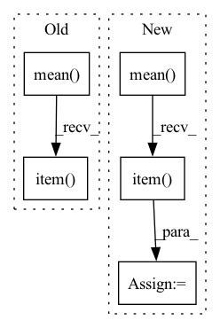

Pattern ID :3203

Before Change
else:
outputs = model(inputs, labels=labels, position_ids=position_ids, token_type_ids=segment_ids)
lm_loss = outputs[0]
eval_loss += lm_loss.mean().item()
nb_eval_steps += 1
eval_loss = eval_loss / nb_eval_steps
perplexity = torch.exp(torch.tensor(eval_loss))
After Change
// Same behavior as modeling_bart.py, besides ignoring pad_token_id
ce_loss_fct = torch.nn.CrossEntropyLoss(ignore_index=args.mlm_ignore_index)
loss = ce_loss_fct(lm_logits.view(-1, lm_logits.shape[-1]), labels.view(-1))
eval_loss += loss.mean().item()
nb_eval_steps += 1
eval_loss = eval_loss / nb_eval_steps
In pattern: SUPERPATTERN
Frequency: 3
Non-data size: 5
Instances
Fragment ID: 12236296
Project Name: stanford-oval/genienlp
Commit Name: b84a6548a69fd9f62652eed1c74fd4b1fdb8b65b
Time: 2020-11-15
Author: mehrad@stanford.edu
File Name: genienlp/paraphrase/run_lm_finetuning.py
M Class Name: AnonimousClass
N Class Name: AnonimousClass
M Method Name: evaluate(5)
N Method Name: evaluate(5)
M Parent Class:
N Parent Class:
M File Name: genienlp/paraphrase/run_lm_finetuning.py
N File Name: genienlp/paraphrase/run_lm_finetuning.py
M Start Line: 318
M End Line: 344
N Start Line: 330
N End Line: 369
'>
Before Change
logits_ba = torch.matmul(z_j, z_i.T) // NxN
avg_self_similarity = logits_ab.diag().mean().item()
avg_other_similarity = logits_ab.masked_select(~torch.eye(batch_size, dtype=bool)).mean().item()
sb_logger.record("avg_self_similarity", avg_self_similarity)
sb_logger.record("avg_other_similarity", avg_other_similarity)
sb_logger.record("self_other_sim_delta", avg_self_similarity - avg_other_similarity)
After Change
avg_self_similarity = logits_ab.diag().mean().item()
logits_other_sim_mask = ~torch.eye(batch_size, dtype=bool, device=logits_ab.device)
avg_other_similarity = logits_ab.masked_select(logits_other_sim_mask).mean().item()
sb_logger.record("avg_self_similarity", avg_self_similarity)
sb_logger.record("avg_other_similarity", avg_other_similarity)
sb_logger.record("self_other_sim_delta", avg_self_similarity - avg_other_similarity)
'>
Fragment ID: 12236294
Project Name: humancompatibleai/eirli
Commit Name: 0399d5ee75b1d0e5783f377d505366862a317577
Time: 2020-08-31
Author: sam@qxcv.net
File Name: src/il_representations/algos/losses.py
M Class Name: SymmetricContrastiveLoss
N Class Name: SymmetricContrastiveLoss
M Method Name: __call__(4)
N Method Name: __call__(4)
M Parent Class: RepresentationLoss
N Parent Class: RepresentationLoss
M File Name: src/il_representations/algos/losses.py
N File Name: src/il_representations/algos/losses.py
M Start Line: 204
M End Line: 208
N Start Line: 204
N End Line: 209
'>
Before Change
logits_ba = torch.matmul(z_j, z_i.T) // NxN
avg_self_similarity = logits_ab.diag().mean().item()
avg_other_similarity = logits_ab.masked_select(~torch.eye(batch_size, dtype=bool)).mean().item()
sb_logger.record("avg_self_similarity", avg_self_similarity)
sb_logger.record("avg_other_similarity", avg_other_similarity)
sb_logger.record("self_other_sim_delta", avg_self_similarity - avg_other_similarity)
After Change
avg_self_similarity = logits_ab.diag().mean().item()
logits_other_sim_mask = ~torch.eye(batch_size, dtype=bool, device=logits_ab.device)
avg_other_similarity = logits_ab.masked_select(logits_other_sim_mask).mean().item()
sb_logger.record("avg_self_similarity", avg_self_similarity)
sb_logger.record("avg_other_similarity", avg_other_similarity)
sb_logger.record("self_other_sim_delta", avg_self_similarity - avg_other_similarity)
'>
Fragment ID: 12236293
Project Name: humancompatibleai/eirli
Commit Name: ba441307091690a629a3b699f9dced09cc1d37fb
Time: 2020-08-31
Author: sam@qxcv.net
File Name: src/il_representations/algos/losses.py
M Class Name: SymmetricContrastiveLoss
N Class Name: SymmetricContrastiveLoss
M Method Name: __call__(4)
N Method Name: __call__(4)
M Parent Class: RepresentationLoss
N Parent Class: RepresentationLoss
M File Name: src/il_representations/algos/losses.py
N File Name: src/il_representations/algos/losses.py
M Start Line: 204
M End Line: 208
N Start Line: 204
N End Line: 209